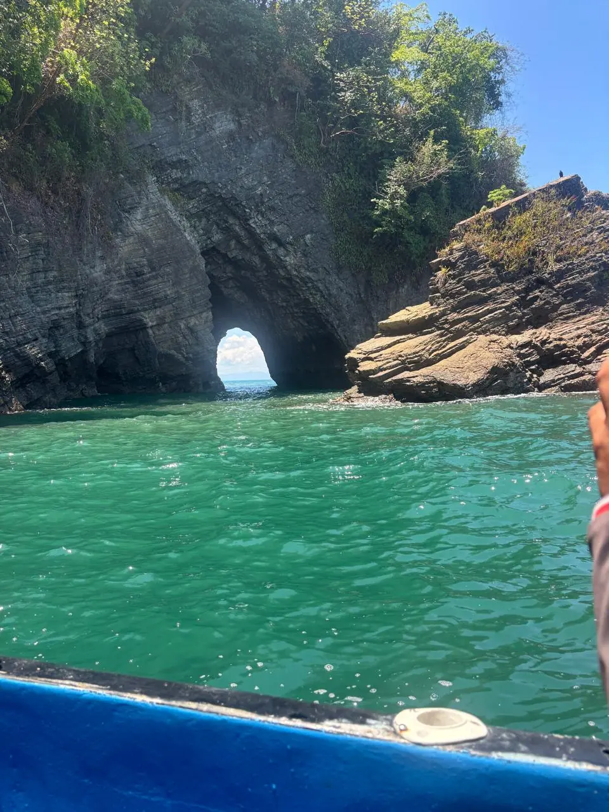

September 2026
What to do in Uvita: the essential guide
Beaches, waterfalls, whales and adventure — everything you can experience on the Costa Ballena.
Read more →Blog
Tips and guides to make the most of your trip to Uvita and the Costa Ballena.

Beaches, waterfalls, whales and adventure — everything you can experience on the Costa Ballena.
Read more →
The best times for humpback whale watching on the Costa Ballena.
Read more →
Transport options to reach Uvita: car, bus, shuttle and domestic flights.
Read more →